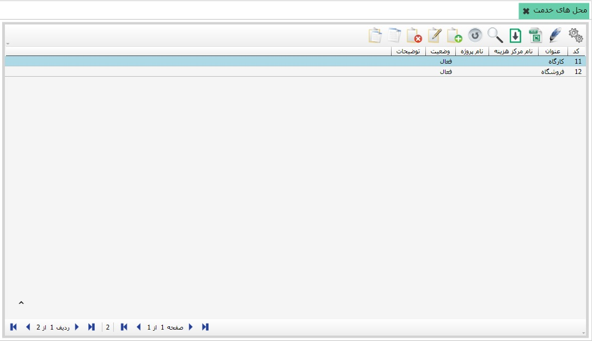
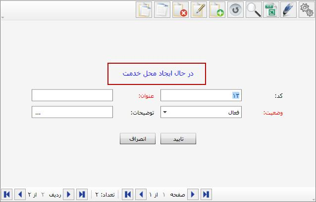

لازم است برای استفاده از نرم افزار حقوق و دستمزد، محل های خدمت یا فعالیت را به تفکیک تعریف کنید. برای این کار از بخش «تعریف اطلاعات پایه» روی منوی «محل های خدمت» کلیک کنید تا صفحه شکل زیر نمایش داده شود:
شکل بالا صفحه «محل های خدمت» را نمایش می دهد که دو محل خدمت کارگاه و فروشگاه نیز برای آن تعریف شده است. شما می توانید محل های خدمت متناسب با حیطه کاری خودتان تعریف نمایید، برای این کار از نوار ابزار موجود در بالای این صفحه روی گزینه اضافه کلیک کنید تا فرم ایجاد محل خدمت باز شود:
فیلد کد به صورت اتوماتیک وارد شده است، شما می توانید این کد را تغییر دهید اما پس از ثبت فرم این کد قابلیت ویرایش ندارد. عنوان محل خدمت مورد نظرتان را وارد کنید، وضعیت آن را فعال انتخاب کنید و توضیحات لازم را در صورت نیاز در قسمت مربوط وارد کنید و در نهایت فرم را تایید نمایید. بدین ترتیب محل خدمت جدید ایجاد می گردد. در صورتی که در سیستم مرکز هزینه و یا پروژه تعریف کرده اید فیلد های مربوط به این دو را نیز تعیین کنید.